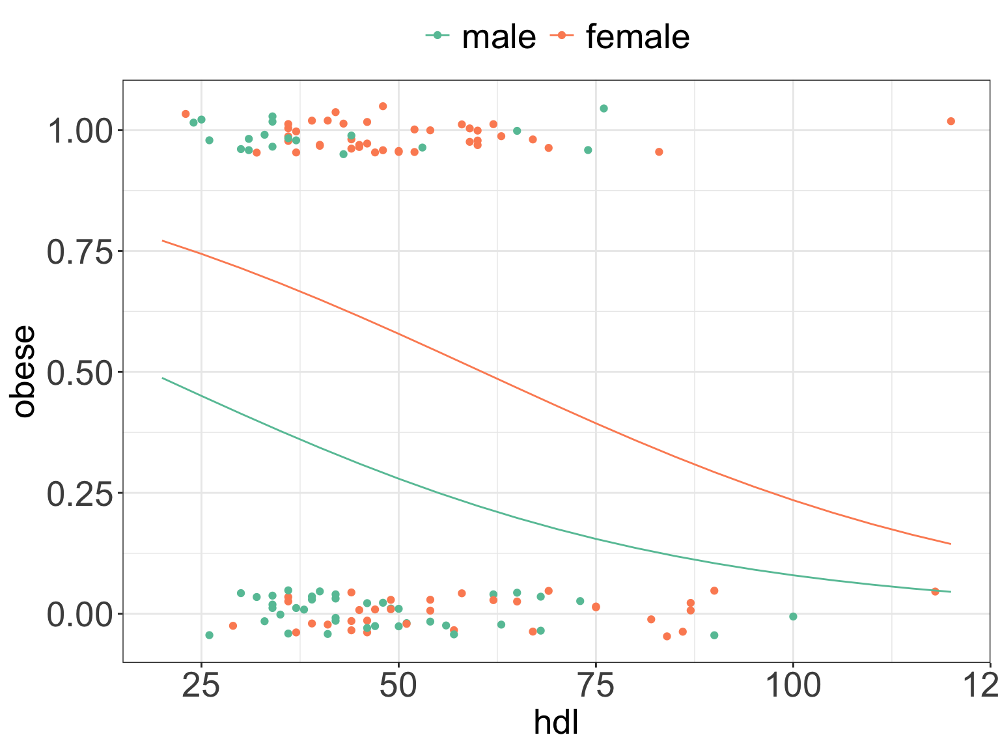

library(tidyverse)
library(magrittr)
library(faraway)
library(ggiraphExtra)
font.size <- 12
my.ggtheme <-
theme_bw() +
theme(axis.title = element_text(size = font.size),
axis.text = element_text(size = font.size),
legend.text = element_text(size = font.size),
legend.title = element_blank(),
legend.position = "top")
# add obesity and diabetes status to diabetes faraway data
inch2m <- 2.54/100
inch2cm <- 2.54
pound2kg <- 0.45
data_diabetes <- diabetes %>%
mutate(height = height * inch2m, height = round(height, 2)) %>%
mutate(waist = waist * inch2cm) %>%
mutate(weight = weight * pound2kg, weight = round(weight, 2)) %>%
mutate(BMI = weight / height^2, BMI = round(BMI, 2)) %>%
mutate(obese= cut(BMI, breaks = c(0, 29.9, 100), labels = c("No", "Yes"))) %>%
mutate(diabetic = ifelse(glyhb > 7, "Yes", "No"), diabetic = factor(diabetic, levels = c("No", "Yes"))) %>%
na.omit()3 Common cases
Let’s go over some common cases of linear models to clarify their interpretation and usage. We will need to run this code to begin with:
3.1 Example: simple linear regression
m1 <- lm(BMI ~ waist, data = data_diabetes)
summary(m1)
##
## Call:
## lm(formula = BMI ~ waist, data = data_diabetes)
##
## Residuals:
## Min 1Q Median 3Q Max
## -13.2374 -2.7689 -0.4532 2.4065 19.3549
##
## Coefficients:
## Estimate Std. Error t value Pr(>|t|)
## (Intercept) -5.12445 2.73538 -1.873 0.0633 .
## waist 0.35298 0.02723 12.965 <2e-16 ***
## ---
## Signif. codes: 0 '***' 0.001 '**' 0.01 '*' 0.05 '.' 0.1 ' ' 1
##
## Residual standard error: 4.426 on 128 degrees of freedom
## Multiple R-squared: 0.5677, Adjusted R-squared: 0.5643
## F-statistic: 168.1 on 1 and 128 DF, p-value: < 2.2e-16
ggPredict(m1) +
my.ggtheme +
xlab("waist [cm]")Model (generic)
- \(Y_i = \alpha + \beta \cdot x_i + \epsilon_i\)
Model (fitted)
- \(BMI_i = -5.12 + 0.35 \cdot waist_i + \epsilon_i\)
Slope
- The value of slope tells us how and by much the outcome changes with a unit change in \(x\)
- If the
waistincreases by 1 unit, here in cm, what would be our expected change inBMI1$? - And if the
waistincreases by 10 units what would be our expected change inBMI2$?
Intercept
- The intercept, often labeled the constant, is the value of Y when \(x_i=0\).
- In models where \(x_i\) can be equal 0, the intercept is simply the expected mean value of response.
- In models where \(x_i\) cannot be equal 0, like in our
BMIexample where it is not possible to haveBMIequal to zero, the intercept has no intrinsic meaning. - The intercept is thus quite often ignored in linear models, as it is the value of slope that dictates the association between exposure and outcome.
Hypothesis testing
- We’ve seen during the lecture that the check for association between exposure and outcome we check if the we have enough evidence to reject \(H_0: \beta=0\) in favor of the alternative \(H_a: \beta\neq0\).
- Here, for the \(\beta\) coefficient we have \(t-statistics = 0.35298 / 0.02723 = 12.965\) and a corresponding \(p-value = 12.96291\), as \(t-statistics \sim t(130-2) << 0.05\). Such large
t-statsiticsor small p-value means we have enough evidence to reject the null hypothesis and conclude that there is a significant association between waist and BMI. - We can double-check R output by calculating p-value ourselves using the Student t distribution:
2*pt(12.96291, df=128, lower=F)
## [1] 4.605102e-25- Is there enough evidence to reject the null hypothesis of \(H_0: \alpha=0\) in favor of the alternative \(H_a: \alpha\neq0\) assuming 5% significance level?3.
- Is there enough evidence to reject the null hypothesis of \(H_0: \alpha=0\) in favor of the alternative \(H_a: \alpha\neq0\) assuming 10% significance level?4.
Predictions
- Using the model we can predict the
BMIvalue for a new observation ofwaist. - For instance, we can find expected
BMIvalue for someone who measures 100 cm inwaistby: - \(BMI = -5.12445 + 0.35298 \cdot 100 = 30.17355\)
- In R can use
predict()function:
# predict BMI for a new value of 100
new_data <- data.frame(waist = 100)
predict(m1, newdata = new_data)
## 1
## 30.17348- What would be
BMIfor someone withwaistmeasurements of 75?5 - What would be
BMIfor someone withwaistmeasurements of 200?6
Model fit
- In simple regression we can use \(R^2\) to assess model fit, here \(R^2 = 0.5677\).
- Do you think that the model fits the data well?7
Model assumptions
We should also not forget to look at the residual plots to check model assumptions:
Code
par(mfrow = c(2,2))
plot(m1)- Given the diagnostic plots can we comment about the assumptions of linear models being met?8
3.2 Example: multiple regression
Let’s try to model BMI using more variables
Model (generic)
- \(Y_i = \beta_0 + \beta_1 \cdot age_i + \beta_2 \cdot chol_i + \beta_3 \cdot hdl_i + \epsilon_i\)
# fit multiple linear regression and print model summary
m2 <- lm(BMI ~ age + chol + hdl, data = data_diabetes)
summary(m2)
##
## Call:
## lm(formula = BMI ~ age + chol + hdl, data = data_diabetes)
##
## Residuals:
## Min 1Q Median 3Q Max
## -13.074 -4.833 -1.132 3.438 22.032
##
## Coefficients:
## Estimate Std. Error t value Pr(>|t|)
## (Intercept) 35.456968 3.149661 11.257 < 2e-16 ***
## age -0.027047 0.040304 -0.671 0.50340
## chol 0.002039 0.012701 0.161 0.87269
## hdl -0.090023 0.032734 -2.750 0.00683 **
## ---
## Signif. codes: 0 '***' 0.001 '**' 0.01 '*' 0.05 '.' 0.1 ' ' 1
##
## Residual standard error: 6.552 on 126 degrees of freedom
## Multiple R-squared: 0.06763, Adjusted R-squared: 0.04543
## F-statistic: 3.046 on 3 and 126 DF, p-value: 0.03124Coefficient interpretations
Using the model answer the questions:
- what would happen to
BMIifhdllevels increase by 10?9 - what would happen to
BMIifageincreases by 1 year?10
Hypothesis testing
- overall, is there a relationship between the response \(Y\) (BMI) and predictors?11
Not so easy: alternative model
Let’s consider another multiple regression model:
- \(Y_i = \beta_0 + \beta_1 \cdot age_i + \beta_2 \cdot chol_i + \beta_3 \cdot hdl_i + \beta_4 \cdot waist_i + \epsilon_i\)
We fit the model in R and look at the model summary:
m2_alt <- lm(BMI ~ age + chol + hdl + waist, data = data_diabetes)
summary(m2_alt)
##
## Call:
## lm(formula = BMI ~ age + chol + hdl + waist, data = data_diabetes)
##
## Residuals:
## Min 1Q Median 3Q Max
## -13.0337 -3.0416 -0.6777 2.2711 18.2894
##
## Coefficients:
## Estimate Std. Error t value Pr(>|t|)
## (Intercept) -0.921431 3.588473 -0.257 0.7978
## age -0.050397 0.027016 -1.865 0.0645 .
## chol -0.006250 0.008519 -0.734 0.4645
## hdl -0.006199 0.022890 -0.271 0.7870
## waist 0.353256 0.028213 12.521 <2e-16 ***
## ---
## Signif. codes: 0 '***' 0.001 '**' 0.01 '*' 0.05 '.' 0.1 ' ' 1
##
## Residual standard error: 4.381 on 125 degrees of freedom
## Multiple R-squared: 0.5864, Adjusted R-squared: 0.5732
## F-statistic: 44.3 on 4 and 125 DF, p-value: < 2.2e-16- What happens to
BMIifhdlincreases by 10?12 - What happens to
BMIifhdlincreases by 10 using the first model again?[decreases by ca. 0.9] - How do you explain the difference in
BMIchanges given these two models?
Specific interpretation
- Obviously there is difference between decrease of 0.9 BMI and decrease of 0.9 in BMI (alternative model).
- Our interpretations need to be more specific and we say that a unit increase in \(x\) with other predictors held constant will produce a change equal to \(\hat{\beta}\) in the response \(y\)
- Often it may be quite unrealistic to be able to control other variables and keep them constant and for our alternative model, a change in
hdlwould also imply a change in total cholesterolchol. - Further, our explanation contains no notation of causation.
- We will learn later how to choose the best model by assessing its fit and including only relevant variable (feature selection), for now we focus on learning how to interpret the coefficients given a fitted model.
3.3 Example: categorical variable
- We want to compare the average BMI of men and women.
- We can do that using linear regression and including gender as binary variable
Code
font.size <- 20
col.blue.light <- "#a6cee3"
col.blue.dark <- "#1f78b4"
my.ggtheme <-
theme_bw() +
theme(axis.title = element_text(size = font.size),
axis.text = element_text(size = font.size),
legend.text = element_text(size = font.size),
legend.title = element_blank(),
legend.position = "top")
# visualize the data with box plot
data_diabetes %>%
ggplot(aes(x = gender, y = BMI, fill = gender)) +
geom_boxplot() +
scale_fill_brewer(palette = "Set2") +
my.ggthemeModel
\[Y_i = \alpha + \beta I_{x_i} + \epsilon_i\] where \[\begin{equation} I_{x_i} = \left\{ \begin{array}{cc} 1 & \mathrm{if\ } x_i=1 \\ 0 & \mathrm{if\ } x_i=0 \\ \end{array} \right. \end{equation}\] for some coding, e.g. we choose to set “Female=1” and “Male=0” or vice versa.
In R we write:
# Note: check that Gender is indeed non-numeric
print(class(data_diabetes$gender))
## [1] "factor"
# fit linear regression and print model summary
m3 <- lm(BMI ~ gender, data = data_diabetes)
print(summary(m3))
##
## Call:
## lm(formula = BMI ~ gender, data = data_diabetes)
##
## Residuals:
## Min 1Q Median 3Q Max
## -14.167 -4.117 -0.327 3.160 19.273
##
## Coefficients:
## Estimate Std. Error t value Pr(>|t|)
## (Intercept) 27.7674 0.8527 32.566 < 2e-16 ***
## genderfemale 3.9396 1.1379 3.462 0.000729 ***
## ---
## Signif. codes: 0 '***' 0.001 '**' 0.01 '*' 0.05 '.' 0.1 ' ' 1
##
## Residual standard error: 6.437 on 128 degrees of freedom
## Multiple R-squared: 0.08563, Adjusted R-squared: 0.07849
## F-statistic: 11.99 on 1 and 128 DF, p-value: 0.0007286Estimates \[\hat{\alpha} = 27.7674\] \[\hat{\beta} = 3.9396\]
- The
lm()function chooses automatically one of the category as baseline, herefemales. - Model summary prints the output of the model with the baseline category “hidden”.
- Notice that the only label we have is “genderfemale”.
- Meaning that we ended-up having a model coded as below: \[\begin{equation} I_{x_i} = \left\{ \begin{array}{cc} 1 & \mathrm{if\ } \quad person_i\;is\;female \\ 0 & \mathrm{if\ } \quad person_i\;is\;male \\ \end{array} \right. \end{equation}\]
- Consequently, if observation \(i\) is female then the expected value of
BMIis: \[E(BMI_i|female) = 27.7674 + 3.9396 = 31.707\] - and if observation \(i\) is male then the expected value of
BMIis: \[E(BMI_i|male) = 27.7674\] We can plot the model in R:
ggPredict(m3) +
my.ggtheme 3.4 Example: categorical & numerical variables
- Above we observed a signficant difference in average
BMIbetween men and women among the study participants. - Can we also observe a significant relationship between
BMIandheight? - And if so, does this relationship depend on
gender?
Code
#|label: fig-htwtgen-plot
#|fig-cap: Scatter plot showing BMI measurments given height stratified by gender.
#|fig-cap-location: margin
#|collapse: true
#|code-fold: false
#|fig-width: 5
#|fig-heigth: 5
# plot the data separately for Male and Female
data_diabetes %>%
ggplot(aes(x = height, y=BMI, col = gender)) +
geom_point(alpha = 0.8, size = 3) +
scale_color_brewer(palette = "Set2") +
my.ggtheme- From the plot we can see that
BMIdecreases slightly withheight. - On average, men are taller than women.
- On average, women have higher BMI than men.
- The relationship between
heightandBMIappears to be the same for males and females, i.e.BMIdecreases withheightfor both men and women.
To assess the relationship we use a model containing height and gender.
Model
\[Y_i = \alpha + \beta I_{x_i} + \gamma x_{2,i} + \epsilon_i\] where \[\begin{equation} I_{x_i} = \left\{ \begin{array}{cc} 1 & \mathrm{if\ } \quad person_i\;is\;female \\ 0 & \mathrm{if\ } \quad person_i\;is\;male \\ \end{array} \right. \end{equation}\]
and \(x_{2,i}\) is the heigth of person \(i\).
In R we write:
# fit linear model and print model summary
m4 <- lm(BMI ~ gender + height, data = data_diabetes)
print(summary(m4))
##
## Call:
## lm(formula = BMI ~ gender + height, data = data_diabetes)
##
## Residuals:
## Min 1Q Median 3Q Max
## -13.7580 -4.2617 -0.3863 3.1646 19.2244
##
## Coefficients:
## Estimate Std. Error t value Pr(>|t|)
## (Intercept) 37.743 13.294 2.839 0.00527 **
## genderfemale 3.163 1.538 2.057 0.04172 *
## height -5.719 7.606 -0.752 0.45350
## ---
## Signif. codes: 0 '***' 0.001 '**' 0.01 '*' 0.05 '.' 0.1 ' ' 1
##
## Residual standard error: 6.448 on 127 degrees of freedom
## Multiple R-squared: 0.08969, Adjusted R-squared: 0.07535
## F-statistic: 6.256 on 2 and 127 DF, p-value: 0.002562Model together with estimates
\[Y_i = \alpha + \beta I_{x_i} + \gamma x_{2,i} + \epsilon_i\] where \[\begin{equation} I_{x_i} = \left\{ \begin{array}{cc} 1 & \mathrm{if\ } \quad person_i\;is\;male \\ 0 & \mathrm{if\ } \quad person_i\;is\;female \\ \end{array} \right. \end{equation}\]
and \(x_{2,i}\) is the weight of person \(i\)
Estimates
\[\hat{\alpha} = 37.743 \] \[\hat{\beta} = 3.163\] \[\hat{\gamma} = -5.719\]
- For instance, using our estimates, for a female who happens to 1.7 m tall we would predict
BMIof: \[E(BMI_i|female, height = 1.7) = 37.743 + 3.163 + (-5.719 \cdot 1.7) = 31.1837\] - and for a male of height 1.7 m tall we would predict
BMIof \[E(BMI_i|male, height = 1.7) = 37.743 + (-5.719 \cdot 1.7) = 28.0207\]
In R we can plot our data and the fitted model to verify our calculations:
# plot the data separately for men and women
# using ggplot() and geom_smooth()
ggPredict(m4) +
scale_color_brewer(palette = "Set2") +
my.ggtheme
3.5 Example: interactions
- The fitted lines in the above example are parallel, the slope is modeled to be the same for men and women, and the intercept denotes the group differences.
- It is also possible to allow for both intercept and slope being fitted separately for each group.
- This is done when we except that the relationships are different in different groups, e.g. increasing in one group and decreasing in the other.
- And we then talk about including interaction effect since the two lines may interact (cross).
Model
\[Y_{i,j} = \alpha_i + \beta_ix_{ij} + \epsilon_{i,j}\] where:
- \(Y_{i,j}\) is the BMI of person \(j\) of gender \(i\)
- \(x_{ij}\) is the height of person \(j\) of gender \(i\)
- \(i=1\) corresponds to women in our example (keeping the same coding as above)
- \(i=2\) corresponds to men
In R we define the interaction term with *:
# fit linear model with interaction
m5 <- lm(BMI ~ gender * height, data = data_diabetes)
print(summary(m5))
##
## Call:
## lm(formula = BMI ~ gender * height, data = data_diabetes)
##
## Residuals:
## Min 1Q Median 3Q Max
## -13.5564 -4.1137 -0.3072 3.1057 19.2005
##
## Coefficients:
## Estimate Std. Error t value Pr(>|t|)
## (Intercept) 31.222 20.318 1.537 0.127
## genderfemale 14.219 26.032 0.546 0.586
## height -1.981 11.638 -0.170 0.865
## genderfemale:height -6.558 15.414 -0.425 0.671
##
## Residual standard error: 6.469 on 126 degrees of freedom
## Multiple R-squared: 0.09099, Adjusted R-squared: 0.06935
## F-statistic: 4.204 on 3 and 126 DF, p-value: 0.007155Now, based on the regression output we would expect:
- for a woman of height \(x\), a BMI value of: \[E(BMI|female\; and \; height=x)=31.222 + 14.219 - 1.981 \cdot x - 6.558 \cdot x = 45.441 -8.539 \cdot x\]
- for a man of height \(x\), a BMI value of \[E(BMI|male\; and \; height=x)=31.222-1.981 \cdot x\]
Estimates \[\hat{\alpha_1} = 45.441\] \[\hat{\beta_1} = 31.222\]
\[\hat{\alpha_2} = 47.34778\] \[\hat{\beta_2} = -1.981\]
- We can see from the regression output that there is no evidence to reject the null hypothesis that the interaction term “Genderfemale:height” is equal to zero.
- Or therefore conclude that the relationship between
BMIandheightis different for men and women. - We can plot the fitted model and see that the lines are no longer parallel.
ggPredict(m5) +
guides(color=guide_legend(override.aes=list(fill=NA))) +
scale_color_brewer(palette = "Set2") +
my.ggtheme3.6 Example: logistic regression with categorical variable
# recode diabetic status to 1 and 0
data_diabetes <- data_diabetes %>%
mutate(obese = ifelse(obese == "Yes", 1, 0))
# fit logistic regression using age and gender
m6 <- glm(obese ~ hdl + gender, family = binomial(link="logit"), data = data_diabetes)
summary(m6)
##
## Call:
## glm(formula = obese ~ hdl + gender, family = binomial(link = "logit"),
## data = data_diabetes)
##
## Coefficients:
## Estimate Std. Error z value Pr(>|z|)
## (Intercept) 0.55047 0.58718 0.937 0.3485
## hdl -0.02997 0.01197 -2.504 0.0123 *
## genderfemale 1.26586 0.40120 3.155 0.0016 **
## ---
## Signif. codes: 0 '***' 0.001 '**' 0.01 '*' 0.05 '.' 0.1 ' ' 1
##
## (Dispersion parameter for binomial family taken to be 1)
##
## Null deviance: 178.71 on 129 degrees of freedom
## Residual deviance: 164.39 on 127 degrees of freedom
## AIC: 170.39
##
## Number of Fisher Scoring iterations: 4- By how much change odds of suffering from obesity when
hdlincreases by 1?13 - What are the odds of suffering from obesity and being a women vs. suffering from obesity and being a man?14
ggPredict(m6) +
scale_color_brewer(palette = "Set2") +
my.ggtheme
We can predict obesity status in R for a man with hdl values of 50:
# define new observation
df <- data.frame(hdl = 50, gender = as.factor("male"))
# predict probability of suffering from obesity
prob_obese <- predict(m6, newdata = df, type = "response")
print(prob_obese)
## 1
## 0.2792396If the waist increases by 1 cm we would expect our
BMIto increase by \(\approx 0.35\) since \(\hat{\beta} = 0.35298\)↩︎If the waist increases by 10 cm we would expect
BMIto increase by \(0.35298 \cdot 10 \approx 3.53\)↩︎No, as \(p-value = 0.0633 \nless 0.05\)↩︎
Yes, as \(p-value = 0.0633 < 0.1\)↩︎
BMI = -5.12445 + 0.35298 = 21.349↩︎
BMI = -5.12445 + 0.35298 = 65.47141, however here we have to be careful in predicting outside the model range.↩︎
In simple linear regression \(R^2\) is the same as \(r^2\) and a value of 0.5677 indicates moderate fit, that agrees with the plot above. Since we have more variables in the data set we could try to improve the fit by including more variables.↩︎
The diagnostics do not indicate a serious violation of model assumptions, with no obvious trends of any kind in the residuals plots. Few samples deviate from diagonal line on the Normal Q-Q plot and these could be removed to ensure that the residuals follow normal distribution.↩︎
decreases by \(-0.090023 \cdot 10 = 0.90023\)↩︎
decrease by 0.027047, however here we can see that the age coefficient is not significant and therefore we should be careful with our interpretations as there is no evidence that this coefficient is different than 0.↩︎
we have seen before that in the case of simple linear regression it was enough to test the null hypothesis of \(H_0: \beta=0\) versus \(H_0: \beta\neq0\) to answers the question whether there is an overall relationship between response and predictor. In case of multiple regression, with many predictors, we need to test the null hypothesis of \[H_0: \beta_1 = \beta_2 = \dots = \beta_p = 0\] versus the alternative \[H_a: at \; least \; one \; \beta_j \; is \; non-zero\] This hypothesis test is performed by computing F-statistics reported in the model summary and calculated as \(F = \frac{(TSS - RSS)/p}{RSS/(n-p-1)}\) where \(TSS = \sum(y_i - \bar{y})^2\) and \(RSS = \sum(y_i - \hat{y_i})^2\). Here, the \(F-statsitics = 3.046\) and the associated \(p-value < 0.05\) so there is enough evidence to reject the null hypothesis in favor of the alternative and conclude that there is an overall significant relationship between response (BMI) and predictors.↩︎
decreases by ca. 0.06↩︎
the odds increase by e^{-0.02997} = 0.97↩︎
The odds of suffering from obesity as a woman are e^{1.26586} = 3.55 times of that suffering from obesity and being a man.↩︎